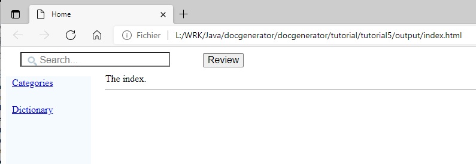
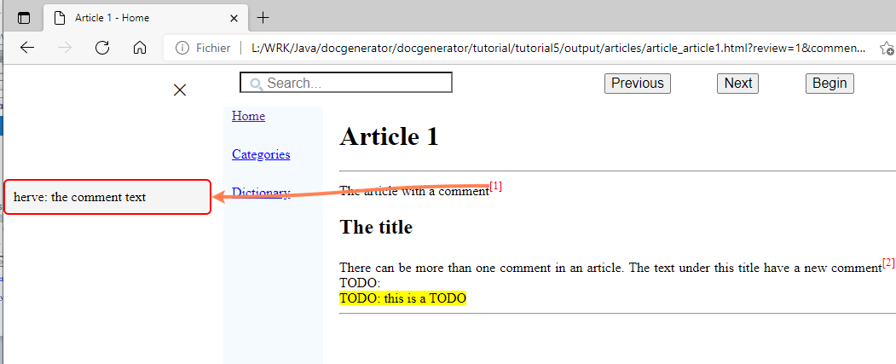

Home
Categories
Dictionary
Download
Project Details
Changes Log
What Links Here
How To
Syntax
FAQ
License
Review system
By using the command-line includeComments or the configuration property, you will be able to add a review system to the wiki. Note that this will only be available for the default html output type of the wiki.
The comments will only be included if:
Upon clicking on the "Review" button, you enter the "review" mode: The interface of the wiki changes, and a slider menu appear on the left, which shows comments and todos.
The comments will only be included if:
- The command-line includeComments or the configuration file includeComments property is true
Overview
If the wiki has been generated with the includeComments option, and there are comments or todos in the wiki source, then the wiki will show a "Review" button allowing to enter in the "review" mode:
Upon clicking on the "Review" button, you enter the "review" mode: The interface of the wiki changes, and a slider menu appear on the left, which shows comments and todos.
Review mode
In the "review" mode, the interface of the wiki changes, and a slider menu appear on the left, which shows comments and todos:
- A "Previous" button allows to go to the previous comment or todo[1]
regardless of the article
- A "Next" button allows to go to the next comment or todo[1]
regardless of the article
- A "Begin" button allows to go to the first comment or todo[1]
regardless of the article
- Clicking on the cross in the left comments menu allows to exit the "review" mode
Example of generation with ant
<java classname="org.docgene.main.DocGenerator"> <arg value="-input=wiki/input"/> <arg value="-output=wiki/output"/> <arg value="-includeComments=true"/> <classpath> <pathelement path="docGenerator.jar"/> </classpath> </java>
Notes
See also
- Review system tutorial: This article is a tutorial explaining how to add a review system to your wiki
- TODO: The "todo" element allows to add a "TODO" in the wiki
- Comment: The "comment" element allows to add a comment in the wiki
- OutputType configuration property: This article is about the outputType configuration property
- TODO system: This article is about the TODO system
×

Categories: Review